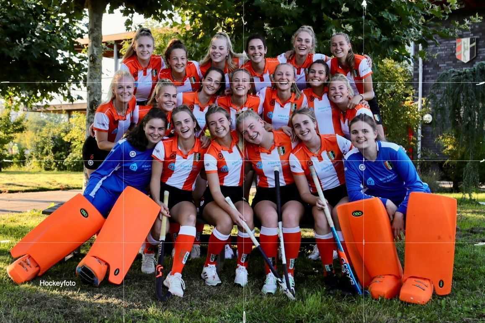
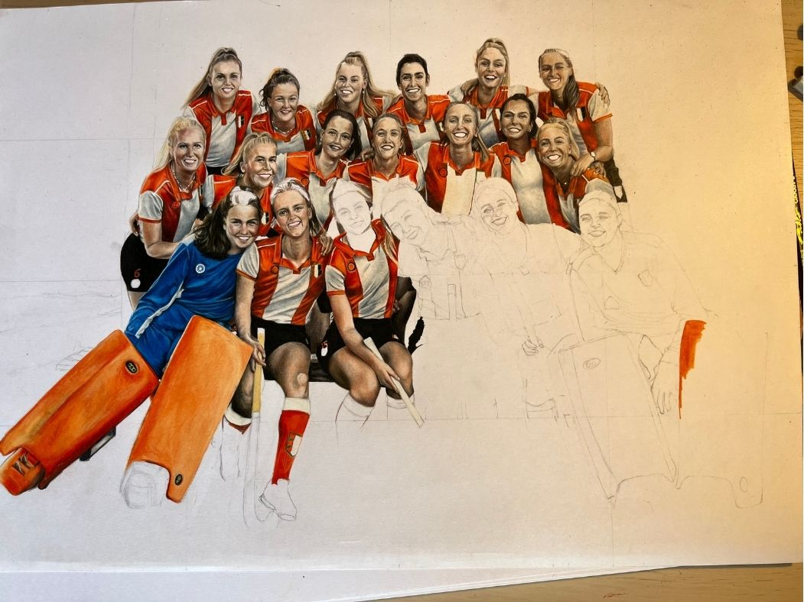
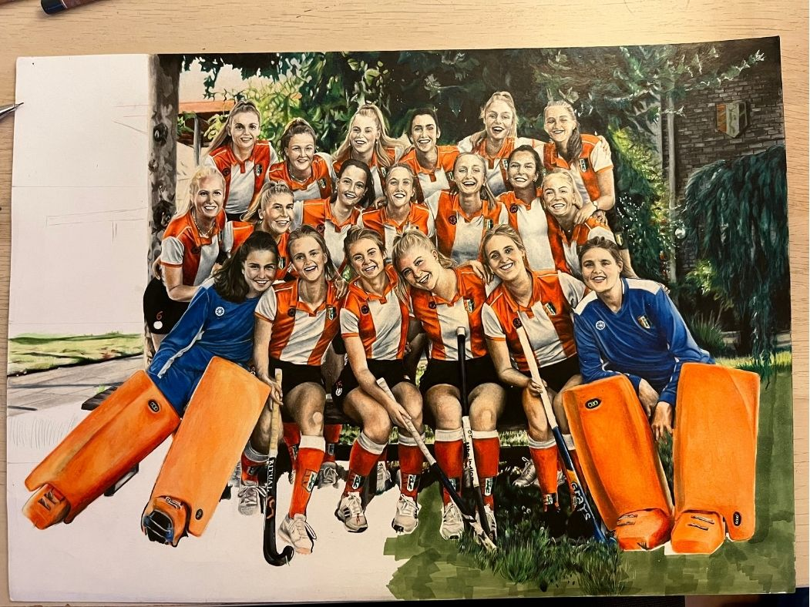

Nu In Ontwikkeling
Op deze pagina deel ik waar ik nu mee bezig ben, van schetsen die nog niet af zijn tot technieken die ik aan het uitproberen ben.
Op deze pagina deel ik waar ik nu mee bezig ben, van schetsen die nog niet af zijn tot technieken die ik aan het uitproberen ben.

Ik ben gestart met een raster maken op de orinele foto die ik wil natekenen. Zo kan ik straks een schets maken met kloppende verhoudingen.

Halverwege: de schets staat, en ik ben begonnen met inkleuren. Nog een lange weg te gaan, maar het team begint al vorm te krijgen.

Weer een stuk verder, bijna klaar. Nu nog de achtergrond afmaken, dan is dit portret compleet.

En hier is het eindresultaat. Klaar!